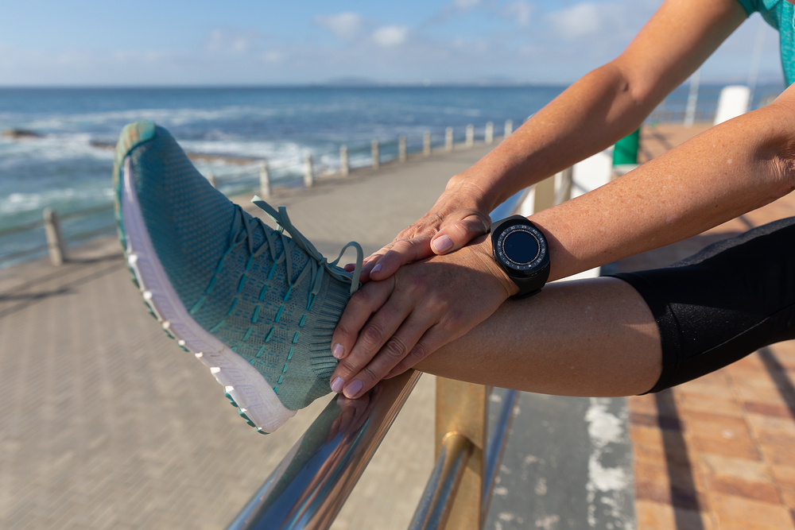
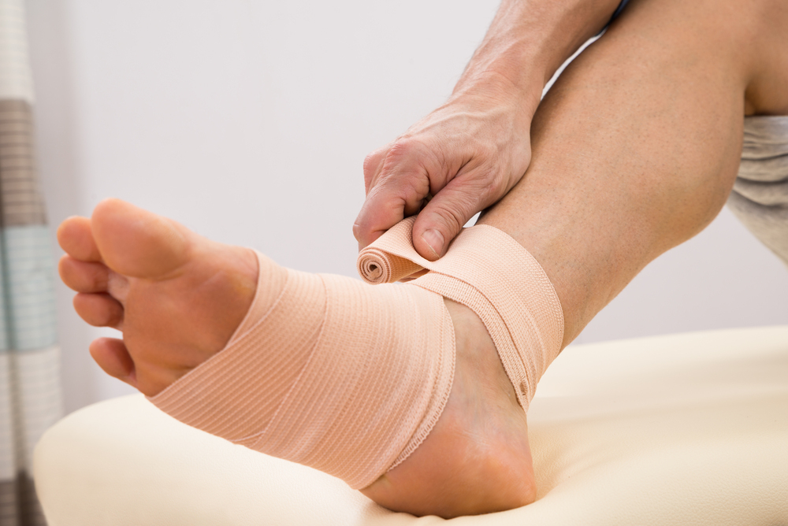

생활·통증 관리
충격이 큰 활동을 줄이고 신발을 조절해 발바닥의 부담과 통증을 관리합니다.
발바닥의 아치를 지지하는 족저근막에 부담이 쌓이면
뒤꿈치 바닥에 통증이 생기고 걸음이 불편해질 수 있습니다.
족저근막은 뒤꿈치에서 발 앞쪽으로 이어지는 조직으로 발의 아치를 지지하고 보행 중 충격을 견딥니다.
부담이 과해지면 뒤꿈치 근처에 통증이 나타나며 활동량과 종아리 유연성, 발의 형태를 함께 살펴봅니다.

오래 서 있거나 운동량이 갑자기 늘면
발바닥이 감당해야 하는 부담이 커질 수 있습니다.
달리기와 점프 같은 활동의 반복은 족저근막에 지속적인 부담을 줍니다.
딱딱한 바닥에서 오래 서 있으면 뒤꿈치와 발바닥에 부하가 쌓입니다.
뻣뻣한 종아리나 평발·높은 아치는 근막에 가해지는 힘에 영향을 줍니다.
체중이 늘거나 활동량이 증가하면 발바닥의 부담이 커질 수 있습니다.
쉬었다가 움직일 때 통증이 두드러지고
몇 걸음 뒤 줄었다가 활동 후 다시 심해질 수 있습니다.
활동량과 신발을 조절하면서 스트레칭을 시행하고
통증이 오래 지속되면 추가 치료의 필요성을 평가합니다.
충격이 큰 활동을 줄이고 신발을 조절해 발바닥의 부담과 통증을 관리합니다.

족저근막과 종아리를 부드럽게 늘리고 상태에 맞는 운동을 시행합니다.

지속 통증은 원인을 다시 확인하고 보조기 등 추가 치료를 검토합니다.
쉬다가 처음 걷기 시작할 때 발바닥 뒤꿈치 부근이 아픈 양상이 나타날 수 있습니다. 다만 모든 뒤꿈치 통증이 족저근막염인 것은 아닙니다.
일시적으로 통증이 줄어도 과도한 보행이나 충격이 증상을 악화시킬 수 있습니다. 신발과 활동량을 점검하고 적합한 스트레칭·운동을 안내받으세요.
뼈돌기가 보인다는 이유만으로 제거가 필요한 것은 아닙니다. 통증 원인과 근막 상태, 치료 반응을 함께 확인해 치료 방향을 결정합니다.